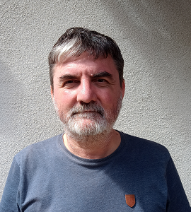

|
Laurențiu Leuştean I am a Full Professor in the Department of Computer Science, Faculty of Mathematics and Computer Science of the University of Bucharest, where I lead the Research Center for Logic, Optimization and Security (LOS). I am a founding member and the president of the Institute for Logic and Data Science (ILDS). Furthermore, I am a senior researcher at the Simion Stoilow Institute of Mathematics of the Romanian Academy (IMAR). I did my PhD in mathematics in 2004 at the University of Bucharest under the supervision of George Georgescu. Between 2004 and 2009 I was an assistant professor and a member of the research group of Ulrich Kohlenbach in the Department of Mathematics of TU Darmstadt. In 2009 I got my Habilitation in mathematics from TU Darmstadt. I received the 2010 Simion Stoilow Prize of the Romanian Academy (awarded in 2012). E-mail: laurentiu.leustean at unibuc.ro, laurentiu.leustean at ilds.ro |
 |
CV and Publication List
Research Interests
Proof mining and applications in optimization, nonlinear analysis and ergodic theory, Non-classical logics, Computer-aided reasoning in mathematics
Google Scholar, Orcid, Publons, Research Gate, Scopus, Semantic Scholar, OPC
Master in Security and Applied Logic
PhD Students
Future events